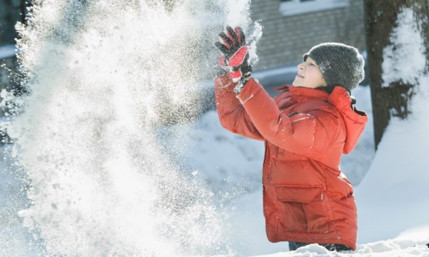
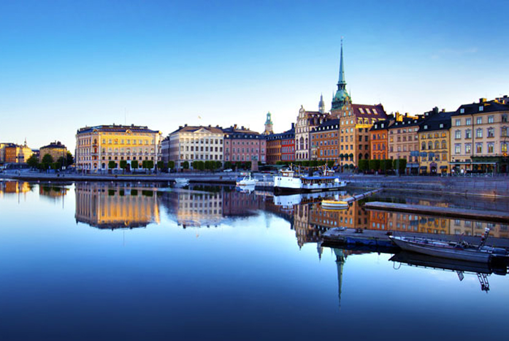

Apa itu Finlandia ?
Finlandia (bahasa Finlandia: Suomi; bahasa Swedia: Finland), dengan nama resmi Republik Finlandia (bahasa Finlandia: Suomen tasavalta; bahasa Swedia: Republiken Finland), adalah sebuah negara Nordik yang terletak di Eropa Utara, serta anggota dari Uni Eropa. Finlandia memiliki perbatasan darat dengan Swedia di barat, Norwegia di utara, dan Rusia di timur sedangkan batas lautnya adalah Laut Baltik di barat daya, Teluk Finlandia di selatan, dan Teluk Bothnia di barat. Finlandia merupakan bagian dari kawasan geografi Fennoscandia, yang di dalamnya juga termasuk Skandinavia dan sebagian Rusia.
Finlandia merupakan negara paling bahagia ke-1 dunia. Pada tahun 2013, populasi Finlandia sudah mencapai 5,5 juta jiwa, dan mayoritas tinggal di kawasan selatan.[9] Dari segi luas, negara ini menempati luasan kedelapan terbesar di Eropa dan negara yang memiliki kepadatan penduduk terendah di Uni Eropa. Finlandia adalah negara republik parlementer dengan pemerintah pusatnya di ibukota Helsinki, dengan pemerintah lokal di 317 munisipalitas,[10] dan daerah otonomi Kepulauan Åland. Lebih dari 1,4 juta jiwa tinggal di kawasan Helsinki Raya, yang menghasilkan sepertiga dari produk domestik bruto negara. Kota-kota besar lainnya antara lain adalah Tampere, Turku, Oulu, Jyväskylä, Lahti, dan Kuopio.
Dari akhir abad ke-12 hingga 1809, Finlandia adalah bagian dari Swedia, yang pengaruhnya masih dirasakan hingga saat ini dengan bahasa Swedia yang digunakan luas dan merupakan salah satu bahasa resmi. Kemudian, wilayah ini masuk dalam Kekaisaran Rusia sebagai Kadipaten Agung Finlandia sampai Revolusi Rusia 1917 menghasilkan Deklarasi Kemerdekaan Finlandia. Hal ini diikuti dengan Perang Saudara Finlandia di mana Republik Pekerja Sosialis Finlandia yang pro-Bolshevik dikalahkan oleh Golongan Putih yang pro-konservatif dengan bantuan dari Kekaisaran Jerman. Setelah beberapa saat mencoba membentuk kerajaan, negara ini menjadi berbentuk republik. Di Perang Dunia II, angkatan bersenjata Finlandia berperang melawan 3 konflik sekaligus Perang Musim Dingin (1939–1940) dan Perang Berkelanjutan (1941–1944) melawan Uni Soviet, serta Perang Lapland melawan Nazi Jerman. Finlandia bergabung dengan PBB tahun 1955 dan menetapkan diri sebagai negara yang netral. Finlandia pun bergabung dengan Organisasi untuk Kerja Sama dan Pembangunan Ekonomi (OECD) tahun 1969, Uni Eropa tahun 1995, dan Zona Euro tahun 1999.

Finlandia termasuk negara industri yang relatif baru, negara ini masih menggantungkan diri dari sektor pertanian hingga tahun 1950-an. Ekonomi mulai berkembang ketika mengembangkan model negara kesejahteraan bergaya nordik, yang menghasilkan kemakmuran dan saat ini menjadi salah satu negara dengan pendapatan per kapita tertinggi di dunia. [11] Finlandia menduduki peringkat teratas dalam beberapa bidang, seperti pendidikan, kekompetitifan ekonomi, kebebasan sipil, kualitas hidup, dan pembangunan manusia. Negara ini memiliki sejarah progresivisme yang panjang. Pada tahun 1906, Finlandia menjadi negara kedua di dunia yang memberikan hak suara penuh pada semua warga negara. Sekitar 73.9% warga Finlandia adalah anggota Gereja Lutheran Evangelikal Finlandia (2014), tetapi Gereja Lutheran memperkirakan hanya 2% anggotanya pergi ke gereja setiap minggu.[12] Sebuah dokumen yang melegalkan perkawinan sesama jenis disetujui parlemen pada tanggal 12 Desember 2014, yang juga telah ditandatangani oleh presiden pada 20 Februari 2015. Pada tahun 2010, Newsweek memilih Finlandia sebagai negara terbaik di dunia.[13][14][15][16][17][18] Finlandia juga menempati posisi pertama dalam Indeks Manusia Dunia bulan Mei 2015.[19]